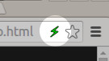

Thank you for installing PageAccel!
PageAccel displays streamlined, accelerated, easy-to-use web pages on websites that offer it.
Without PageAccel:
Standard, non-streamlined, slow-loading
Standard, non-streamlined, slow-loading
With PageAccel:
Simplified, streamlined, faster-loading
Simplified, streamlined, faster-loading
When you're on a page, look for the PageAccel icon in the URL bar: 
- If it's green, like this:
 , then you are browsing a simplified web page.
, then you are browsing a simplified web page. - If it's yellow, like this:
 , then you have elected to view the standard, non-streamlined version of a web page.
, then you have elected to view the standard, non-streamlined version of a web page.
You can toggle between simplified and standard content
by clicking the or icon in the URL bar and clicking "Enable" or "Disable" for that web site.
by clicking the
or icon in the URL bar and clicking "Enable" or "Disable" for that web site.
We hope you like PageAccel. Enjoy!
(You may now close this tutorial window / tab.)